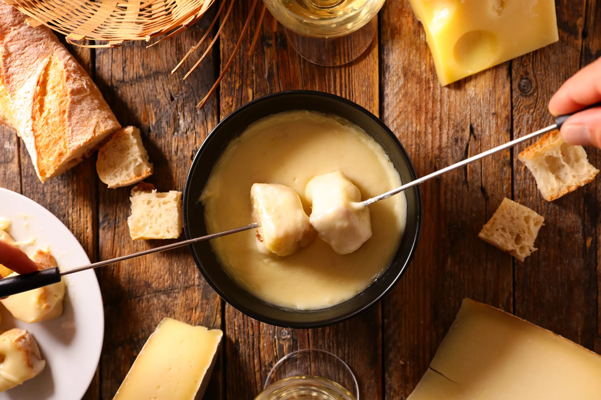
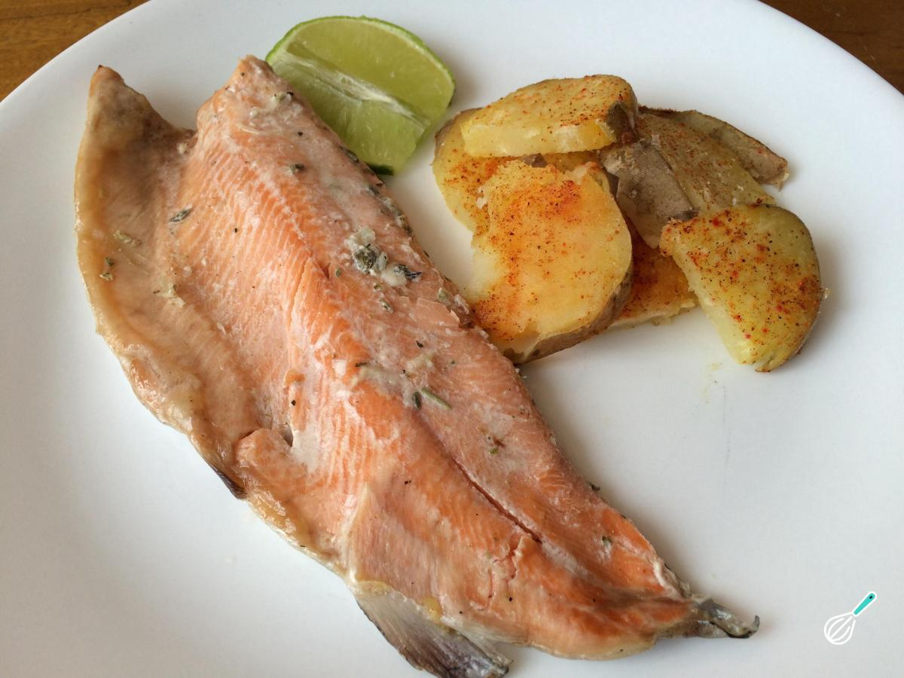
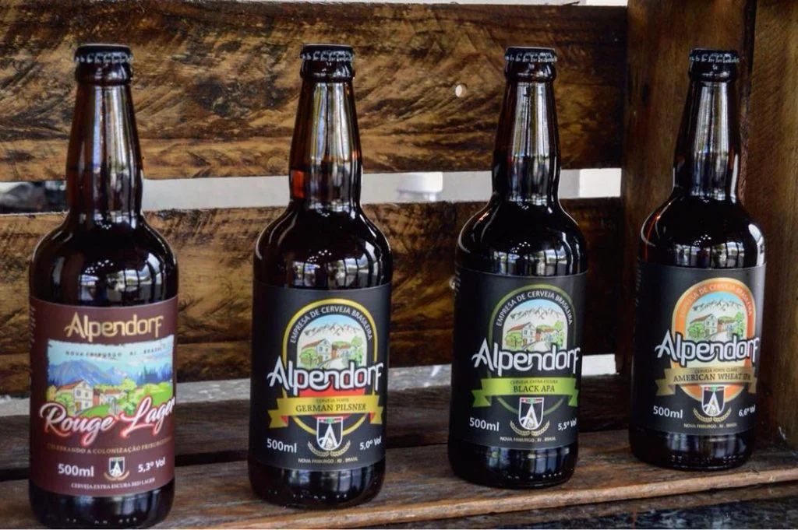
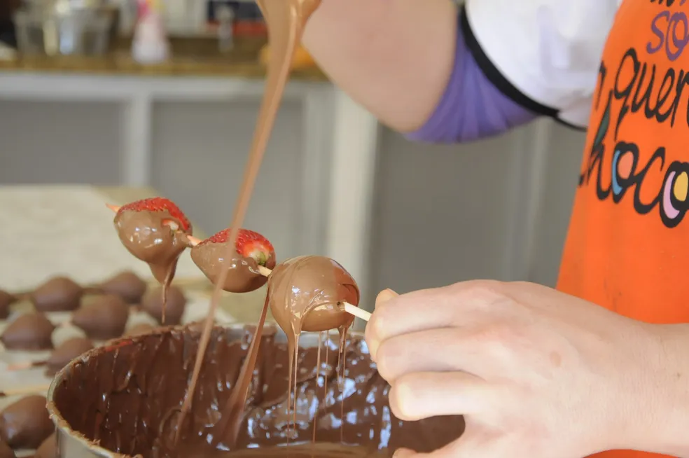

-
Tradição suíça

A forte influência da imigração suíça faz parte da identidade gastronômica de Nova Friburgo. Pratos como fondue, raclette e outras receitas de origem europeia podem ser encontrados em restaurantes e estabelecimentos da cidade, especialmente na região de Lumiar e São Pedro da Serra.
-
Truta

A truta é um dos alimentos mais associados à gastronomia da região serrana do Rio de Janeiro. Criada em águas frias e limpas, pode ser encontrada preparada de diversas formas nos restaurantes de Nova Friburgo e arredores.
-
Cervejas artesanais

O clima da serra favorece a produção de cervejas artesanais. Nova Friburgo possui estabelecimentos que produzem e servem diferentes estilos, tornando a cervejaria uma atração para os visitantes interessados em gastronomia.
-
Chocolates e doces

O clima frio da serra combina com chocolates, cafés e doces artesanais. Esses produtos são encontrados em diferentes pontos turísticos e estabelecimentos da cidade, sendo também uma opção popular de lembrança para os visitantes.